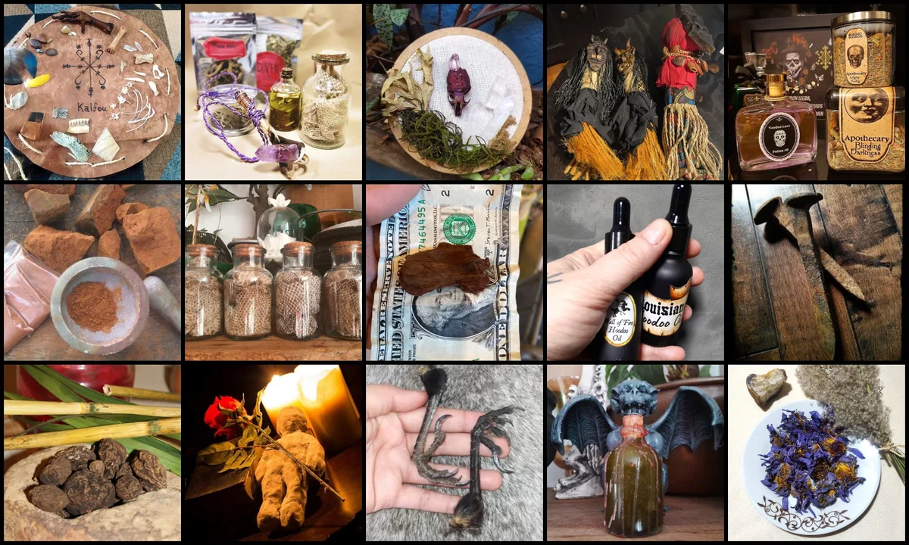
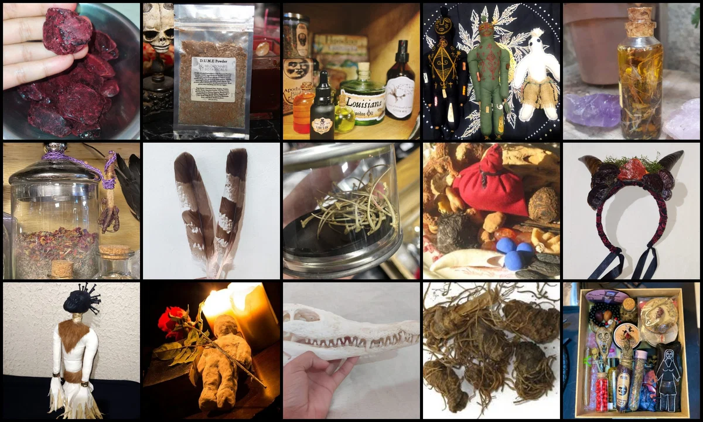

Loja 446
Witchcraft House
Welcome to Salem.
- Endereço
- Av. São João, 439 — República, São Paulo
Galeria do Rock, 3º andar, loja 446 - Horário
- Terça a sábado, das 10h às 18h
House of Witchcraft
& Hoodoo — Apothecary
São Paulo
desde 2020
Nº 28 / 56 Lilith — Black Vanilla Uma baunilha adulta, que não pede licença.
A perfumaria Coven nasceu em 2020 para resgatar mitos antigos, lendas esquecidas e a essência da literatura gótica.
Das sombras dos contos de fadas aos segredos de deuses, bruxas e daemons, transformamos o arcano em arte. Criamos para quem não teme a escuridão.
Cada frasco, cor e nome é escolhido meticulosamente para criar uma sinergia perfeita entre aroma e mensagem. Na Coven, perfumar-se é um ritual: vestir a fragrância e evocar a atmosfera do extraordinário.
Temos perfumes autorais e releituras — seguimos o caminho olfativo de grandes casas, acentuando notas e acordes. Tudo é feito à mão, em pequenos lotes, respeitando o tempo de maceração.
“Mergulhamos no ocultismo para dar vida nova ao invisível.”
Escolha um nome para conhecer a criação, a inspiração e as notas olfativas. Todos os perfumes são produzidos com álcool de cereais, blends exclusivos e matéria-prima importada.
Sabonetes, hidratantes, óleos bifásicos, incensos e demais criações são produzidos sob encomenda ou em pequenos lotes limitados. Consulte a disponibilidade ou faça sua reserva.

Hoodoo é uma prática espiritual trazida para as Américas pelos africanos ocidentais escravizados, unindo o conhecimento sobre ervas e curas dos povos nativos americanos aos grimórios europeus.
Não é uma religião: pode ser praticado por todos que entendam e respeitem a crença animista de que tudo o que existe possui um espírito ou energia, a ser comandada pelo conjurador. O foco é trazer facilidade, cura, boa ou má sorte. Um estilo de vida.
Não existe sacrifício animal no Hoodoo. Os curios de origem animal foram encontrados na natureza ou encerraram seu ciclo — nunca abatidos — e são honrados respeitosamente.


Entre pela porta com paz e toda a paz irá com você. Entre com verdadeira reverência em seu coração e receba suas bênçãos. Deixe seus desejos no altar e todas as coisas serão recompensadas.
Obras em diversos tamanhos, com envio para todo o mundo. @danispallart ↗
Inspiradas no charme misterioso das lojas de Salem e New Orleans: pequenas, acolhedoras e autênticas. Todos são bem-vindos em nosso Coven.
Loja 446
Welcome to Salem.
Loja 469
Welcome to New Orleans.